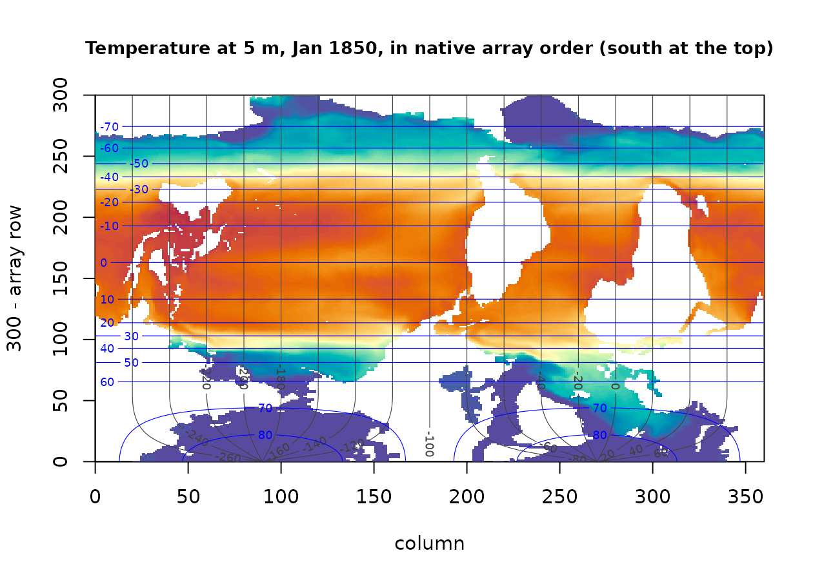
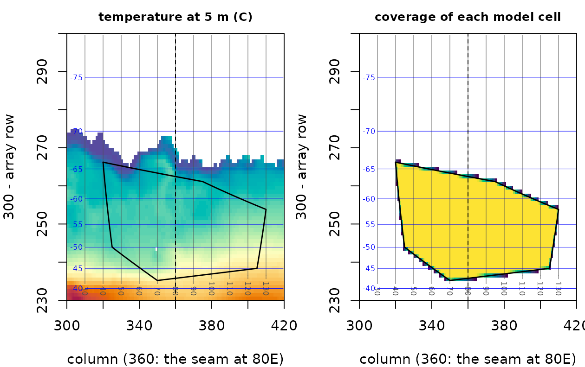
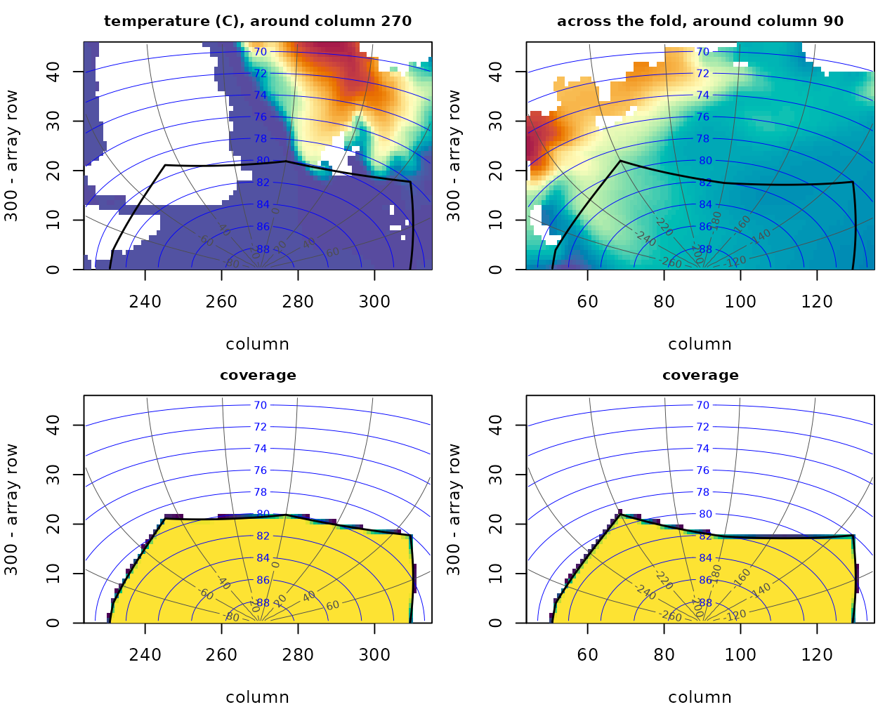

Burning onto a model's native ocean grid
Source:vignettes/native-ocean-grid.Rmd
native-ocean-grid.RmdOcean models run on their own grids. The ocean of ACCESS-ESM1.6 (the MOM model) uses a tripolar grid of 300 rows and 360 columns. South of 65°N it is a regular 1° longitude by an uneven latitude grid; north of 65°N it bends into a cap whose two northern poles sit on land, so that no grid pole lies in the Arctic Ocean.
Statistics over a region of such output usually start by regridding to longitude and latitude, which smooths the values and changes the cells. This vignette instead burns a polygon straight onto the model’s own cells: the polygon is moved into the grid’s index space (fractional column and row), burned on a lattice of unit cells, and the coverage of every model cell comes back exact. It starts with the rectilinear part of the grid, south of 65°N, which is all of the Southern Ocean, and then goes into the tripolar cap.
Native array order
A two-dimensional array read through GDAL arrives as a vector in the
order the array is stored, first row first.
matrix(v, nrow, byrow = TRUE) turns it into a matrix whose
row 1 is the array’s first row, exactly as
graphics::rasterImage() and ximage::ximage()
draw it: row 1 at the top, and axes running over c(0, ncol)
and c(0, nrow), which is index space.
cbr uses the same order. Row 1 of a burn is its top row,
cb_materialize() returns cells row by row from row 1, and
cb_as_matrix() fills byrow. So if the burn
puts the array’s row 0 at its top, every result lines up with the
model’s arrays cell for cell, with no flips or transposes anywhere.
For this grid the array’s first row is the southernmost (latitude increases with the row index), so all the pictures here are south-up. That is not a mistake to be corrected: it is the array.
The data
The model output is available through a virtual multidimensional dataset, and the static grid (cell corners and areas) as netCDF files. This is how the arrays used here were read; the code is not run when the vignette is built.
library(gdalraster)
src <- paste0("/vsicurl/https://data.source.coop/ausantarctic/ausantarctic-scratch/",
"access-esm/access-esm1-6.historical.ocean-3d-temp-1mon-mean/mdim.vrt")
fx <- function(v) {
sprintf("/vsicurl/https://projects.pawsey.org.au/ct-esm1-6/output000/ocean/ocean-2d-%s-fx.nc", v)
}
## a 2D array, or a 2D view of one, in native order: row 1 is array row 0
read_mdim <- function(dsn, name, view = "") {
ds <- mdim_as_classic(dsn, name, idx_xdim = 1, idx_ydim = 0, view_expr = view)
on.exit(ds$close())
dm <- ds$dim()
matrix(ds$read(1, 0, 0, dm[1], dm[2], dm[1], dm[2]), nrow = dm[2], byrow = TRUE)
}
temp <- read_mdim(src, "temp", "[0,0,:,:]") # Jan 1850, top level (5 m), K
geolon_t <- read_mdim(src, "geolon_t") # cell centres
geolat_t <- read_mdim(src, "geolat_t")
geolon_c <- read_mdim(fx("geolon_c"), "geolon_c") # cell corners
geolat_c <- read_mdim(fx("geolat_c"), "geolat_c")
area_t <- read_mdim(fx("area_t"), "area_t") # cell areas, m^2The netCDF files are read through the multidimensional API too, not the classic raster driver, because the classic driver may present an array whose latitude increases with the row as north-up, reversing its rows. Here we want the array as it is stored.
cbr ships these arrays, exactly as read:
library(cbr)
x <- readRDS(system.file("extdata", "access-esm1-6-ocean-grid.rds", package = "cbr"))
temp <- x$temp - 273.15 # conservative temperature, C
geolon_t <- x$geolon_t; geolat_t <- x$geolat_t
geolon_c <- x$geolon_c; geolat_c <- x$geolat_c
area_t <- x$area_t
dim(temp)
#> [1] 300 360
c(land_cells = sum(is.na(temp)), first_row_lat = geolat_t[1, 1], last_row_lat = max(geolat_t[300, ]))
#> land_cells first_row_lat last_row_lat
#> 38218.00000 -77.87663 89.74871The grid in index space
ximage() draws the temperature as stored, and
xcontour() adds contours of the longitude and latitude of
each cell centre. The axes are column and row: index space, where the
burn happens.
ximage::ximage(temp, col = hcl.colors(96, "Spectral", rev = TRUE),
xlab = "column", ylab = "300 - array row")
ximage::xcontour(geolon_t, add = TRUE, levels = seq(-280, 80, 20), col = "grey25", lwd = 0.6)
ximage::xcontour(geolat_t, add = TRUE, levels = seq(-80, 80, 10), col = "blue", lwd = 0.6)
title("Temperature at 5 m, Jan 1850, in native array order (south at the top)", cex.main = 0.9)
Three things in that picture shape the method.
- Longitude contours (grey) are vertical and evenly spaced: in the rectilinear part the column is an affine function of longitude, with longitude running from -280 to 80, a period of 360.
- Latitude contours (blue) are horizontal but unevenly spaced: rows are closest together near the equator. The row is a monotone but only piecewise linear function of latitude, with a change of slope at every row wall.
- Near the bottom of the picture, north of 65°N, the contours curve around the cap’s two poles: index space is no longer a product of a longitude axis and a latitude axis there.
Cell walls
The corners geolon_c and geolat_c are at
the north-east corner of the cell with the same index (MOM’s B-grid). In
the rectilinear rows the corner latitude is constant along each row, so
the walls are two vectors: 361 longitudes and one latitude per row
boundary. The south wall of the first row is not in the file (it would
be a corner of a row that does not exist); it is taken as the mirror of
its north wall about the cell centre. That row lies under the Antarctic
ice and is land.
## the first row whose corner latitudes vary along it: the tripolar cap
nrect <- which(apply(geolat_c, 1, function(r) diff(range(r))) > 1e-4)[1] - 1L
lat_wall <- c(2 * geolat_t[1, 1] - geolat_c[1, 1], geolat_c[seq_len(nrect), 1])
lon_wall <- c(geolon_c[1, 360] - 360, geolon_c[1, ])
c(rectilinear_rows = nrect, north_limit = lat_wall[nrect + 1],
lon_from = lon_wall[1], lon_to = lon_wall[361], lon_step_error = max(abs(diff(lon_wall) - 1)))
#> rectilinear_rows north_limit lon_from lon_to
#> 245 65 -280 80
#> lon_step_error
#> 0
range(diff(lat_wall))
#> [1] 0.2469177 0.9999218The model’s own cell areas are a check on the walls: each should be the spherical area between its walls.
R <- 6371000
sphere <- outer(R^2 * diff(sin(lat_wall * pi / 180)), diff(lon_wall) * pi / 180)
summary(as.vector(area_t[seq_len(nrect), ] / sphere - 1))
#> Min. 1st Qu. Median Mean 3rd Qu. Max.
#> -3.479e-04 -7.685e-05 1.436e-07 -2.935e-05 7.023e-06 5.947e-05They agree to a few parts in ten thousand, the precision of the stored single-precision areas.
From longitude and latitude to index space
Within one cell, the column depends only on longitude and the row only on latitude, each linearly, so the map from longitude and latitude to index space is affine inside every cell. A straight edge stays straight while it crosses a cell, but it bends where it crosses a wall into rows of a different height. Moving only a polygon’s vertices would draw each edge as one straight line in index space instead, off the true edge wherever the row spacing changes along it. Inserting a vertex wherever an edge crosses a wall makes every piece lie within one cell, where the map is exact.
Two more details. The burn’s top row must be the array’s row 0, so a
fractional array row r (0 at the south wall of the first
row) becomes y = 300 - r. And longitude is periodic: a
polygon that crosses the grid’s seam at 80°E (where -280 meets 80) is
burned on a lattice two periods wide, so that it stays in one piece, and
its columns are folded back onto the 360 model columns afterwards.
## cut every edge at each wall it crosses; the crossing coordinate is put on
## the wall exactly, and its index is the wall's
cut_at_walls <- function(ring, xw, yw) {
pieces <- lapply(seq_len(nrow(ring) - 1L), function(k) {
p <- ring[k, ]; q <- ring[k + 1L, ]
cx <- if (q[1] != p[1]) which(xw > min(p[1], q[1]) & xw < max(p[1], q[1])) else integer()
cy <- if (q[2] != p[2]) which(yw > min(p[2], q[2]) & yw < max(p[2], q[2])) else integer()
t <- c(0, (xw[cx] - p[1]) / (q[1] - p[1]), (yw[cy] - p[2]) / (q[2] - p[2]))
ix <- c(NA, cx - 1, rep(NA, length(cy)))
iy <- c(NA, rep(NA, length(cx)), cy - 1)
o <- order(t)
data.frame(lon = p[1] + t[o] * (q[1] - p[1]), lat = p[2] + t[o] * (q[2] - p[2]),
ix = ix[o], iy = iy[o])
})
out <- do.call(rbind, pieces)
rbind(out, out[1, ])
}
## longitude and latitude to burn coordinates: x is the (fractional) column,
## y = nrow - r puts array row 0 at the top
to_index <- function(pts, xw, yw, nrow) {
x <- stats::approx(xw, seq_along(xw) - 1, pts$lon)$y
r <- stats::approx(yw, seq_along(yw) - 1, pts$lat)$y
x[!is.na(pts$ix)] <- pts$ix[!is.na(pts$ix)]
r[!is.na(pts$iy)] <- pts$iy[!is.na(pts$iy)]
if (anyNA(x) || anyNA(r)) stop("the polygon leaves the rectilinear part of the grid")
cbind(x = x, y = nrow - r)
}
## fold the columns of a burn on a lattice two periods wide back onto one
fold_columns <- function(b, ncol) {
r <- b$runs
across <- r$col_start <= ncol & r$col_end > ncol
right <- r[across, ]
right$col_start <- ncol + 1L
r$col_end[across] <- ncol
r <- rbind(r, right)
wrap <- r$col_start > ncol
r$col_start[wrap] <- r$col_start[wrap] - ncol
r$col_end[wrap] <- r$col_end[wrap] - ncol
e <- b$edges
e$col[e$col > ncol] <- e$col[e$col > ncol] - ncol
b$runs <- r[order(r$id, r$row, r$col_start), ]
b$edges <- e
for (nm in c("runs", "edges")) attr(b[[nm]], "row.names") <- .set_row_names(nrow(b[[nm]]))
attr(b, "dimension") <- c(ncol, attr(b, "dimension")[2])
attr(b, "extent") <- c(0, ncol, 0, attr(b, "dimension")[2])
b
}
## burn a polygon given as a closed ring of longitude and latitude (straight
## edges in longitude and latitude, less than 360 degrees wide)
burn_lonlat <- function(ring, lon_wall, lat_wall, nrow, cut = TRUE, coverage = TRUE) {
ncol <- length(lon_wall) - 1L
ring[, 1] <- ring[, 1] - 360 * floor((min(ring[, 1]) - lon_wall[1]) / 360)
xw <- c(lon_wall, lon_wall[-1] + 360)
pts <- if (cut) {
cut_at_walls(ring, xw, lat_wall)
} else {
data.frame(lon = ring[, 1], lat = ring[, 2], ix = NA, iy = NA)
}
idx <- to_index(pts, xw, lat_wall, nrow)
g <- wk::wkt(sprintf("POLYGON ((%s))", paste(sprintf("%.17g %.17g", idx[, 1], idx[, 2]), collapse = ", ")))
b <- cb_burn(g, extent = c(0, 2 * ncol, 0, nrow), dimension = c(2 * ncol, nrow), coverage = coverage)
out <- fold_columns(b, ncol)
attr(out, "index_ring") <- idx
out
}A Southern Ocean sector
The polygon runs from 40°E to 130°E across the Indian sector of the Southern Ocean, with slanted edges, and crosses the seam at 80°E. Its edges are straight lines in longitude and latitude.
ring <- rbind(c(40, -66), c(95, -63), c(130, -58), c(125, -45), c(70, -42), c(45, -50), c(40, -66))
b <- burn_lonlat(ring, lon_wall, lat_wall, nrow = 300)
b
#> <cb_burn>
#> grid: 360 col x 300 row
#> extent: x[0, 360] y[0, 300]
#> mode: coverage
#> tables: runs=56, edges=238, lines=0, points=0, notes=0
c(vertices = nrow(ring), after_cutting = nrow(attr(b, "index_ring")))
#> vertices after_cutting
#> 7 243The burn is exact in longitude and latitude. Each cell’s fraction times the cell’s area in degrees adds up to the polygon’s area, and it does not when only the vertices are moved:
shoelace <- function(m) abs(sum(m[-nrow(m), 1] * m[-1, 2] - m[-1, 1] * m[-nrow(m), 2])) / 2
cell_deg2 <- rep(c(diff(lat_wall), rep(0, 300 - nrect)), each = 360) * rep(diff(lon_wall), 300)
covered_deg2 <- function(b) sum(cb_materialize(b, background = 0) * cell_deg2)
b_vertices <- burn_lonlat(ring, lon_wall, lat_wall, nrow = 300, cut = FALSE)
c(polygon = shoelace(ring), cut_at_walls = covered_deg2(b), vertices_only = covered_deg2(b_vertices))
#> polygon cut_at_walls vertices_only
#> 1575.000 1575.000 1573.008Cell by cell, the fractions match each cell’s rectangle clipped by the polygon in planar longitude and latitude, here with sf on every cell of the polygon’s bounding box:
old <- suppressMessages(sf::sf_use_s2(FALSE))
xw <- c(lon_wall, lon_wall[-1] + 360)
cols2 <- seq(floor(stats::approx(xw, 0:720, min(ring[, 1]))$y) + 1,
ceiling(stats::approx(xw, 0:720, max(ring[, 1]))$y))
rows <- seq(floor(stats::approx(lat_wall, 0:nrect, min(ring[, 2]))$y) + 1,
ceiling(stats::approx(lat_wall, 0:nrect, max(ring[, 2]))$y))
target <- sf::st_polygon(list(ring))
boxes <- expand.grid(col2 = cols2, row = rows)
reference <- mapply(function(c2, r) {
box <- sf::st_polygon(list(rbind(c(xw[c2], lat_wall[r]), c(xw[c2 + 1], lat_wall[r]),
c(xw[c2 + 1], lat_wall[r + 1]), c(xw[c2], lat_wall[r + 1]),
c(xw[c2], lat_wall[r]))))
hit <- sf::st_intersection(box, target)
if (length(hit)) sf::st_area(hit) / sf::st_area(box) else 0
}, boxes$col2, boxes$row)
coverage <- cb_materialize(b, background = 0)
burned <- coverage[(boxes$row - 1) * 360 + ((boxes$col2 - 1) %% 360) + 1]
c(cells = nrow(boxes), partly_covered = sum(reference > 0 & reference < 1),
largest_difference = max(abs(burned - reference)))
#> cells partly_covered largest_difference
#> 2.880000e+03 2.400000e+02 1.916506e-07
invisible(suppressMessages(sf::sf_use_s2(old)))The differences are at the single precision in which the burn stores edge fractions.
The burn on the model grid
The coverage is a vector in the model’s own order, so
cb_as_matrix() gives a matrix that ximage()
draws on the same axes as the temperature. The window below runs over 60
columns either side of the seam, columns 301 to 360 and then 1 to 60,
which is the stretch of the two-period lattice the polygon was burned
on, so its outline in index space needs no folding. Only the
southernmost 70 rows are shown.
coverage <- cb_materialize(b, background = 0)
cov_m <- cb_as_matrix(coverage)
cov_m[cov_m == 0] <- NA
k <- 70
cols <- c(301:360, 1:60)
ext <- c(300, 420, 300 - k, 300)
lon_win <- geolon_t[seq_len(k), cols]
lon_win[, 61:120] <- lon_win[, 61:120] + 360 # unwrap across 80E for the contours
idx <- attr(b, "index_ring")
panel <- function(m, title, col, zlim = NULL) {
ximage::ximage(m[seq_len(k), cols], extent = ext, col = col, zlim = zlim,
xlab = "column (360: the seam at 80E)", ylab = "300 - array row")
ximage::xcontour(lon_win, extent = ext, add = TRUE, levels = seq(20, 160, 10),
col = "grey30", lwd = 0.5, labcex = 0.55)
ximage::xcontour(geolat_t[seq_len(k), cols], extent = ext, add = TRUE,
levels = seq(-75, -30, 5), col = "blue", lwd = 0.5, labcex = 0.55)
abline(v = 360, lty = 2)
lines(idx[, "x"], idx[, "y"], lwd = 1.5)
title(title, cex.main = 0.85)
}
op <- par(mfrow = c(1, 2), mar = c(4, 4, 2, 0.5))
panel(temp, "temperature at 5 m (C)", hcl.colors(96, "Spectral", rev = TRUE))
panel(cov_m, "coverage of each model cell", hcl.colors(64, "Viridis"), zlim = c(0, 1))
par(op)The white cell inside the polygon in the left panel is land: Kerguelen, the only island the model’s 1° cells resolve in this sector.
Mean temperature over the sector
With the coverage, the model’s cell areas and the temperature all in the same order, an area-weighted mean is plain vector arithmetic. Land cells have no temperature and drop out.
temp_v <- as.vector(t(temp)) # row by row from array row 0: the burn's order
area_v <- as.vector(t(area_t))
ocean <- !is.na(temp_v)
sector_mean <- function(b) {
w <- cb_materialize(b, background = 0) * area_v
c(mean_C = sum(w[ocean] * temp_v[ocean]) / sum(w[ocean]),
ocean_km2 = sum(w[ocean]) / 1e6, land_km2 = sum(w[!ocean]) / 1e6)
}
b_centres <- burn_lonlat(ring, lon_wall, lat_wall, nrow = 300, coverage = FALSE)
round(rbind(`cut at walls (exact)` = sector_mean(b),
`vertices only` = sector_mean(b_vertices),
`cell centres` = sector_mean(b_centres)), 4)
#> mean_C ocean_km2 land_km2
#> cut at walls (exact) 7.0946 11422383 7013.312
#> vertices only 7.0875 11400945 7013.312
#> cell centres 7.0925 11426634 7013.312For a field as smooth as temperature the three means differ by less than a hundredth of a degree. The areas differ more: moving only the vertices loses about 21,000 km² along the slanted edges, and the cell-centre rule (whole cells whose centre is inside) gains some. For a field with sharp gradients at the polygon’s edge, or for totals rather than means, those cells matter.
Into the tripolar cap
North of 65°N the row and column are no longer separate functions of latitude and longitude, so walls cannot be found one axis at a time. The grid’s own geometry gives the way in. Two facts about this grid, checked in the data:
- the top row folds onto itself: corner
iof the top row is the same point as corner358 - i, so celliof the top row meets cell359 - iacross its top edge, and the geographic North Pole lies on that fold, at column 90 (and, folded, 270); - the two singular points of the cap, where the grid’s cells collapse, are at 65°N on 80°E and 100°W, on land.
top <- 300
## 0-based corner i against corner 358 - i: R columns 1:358 against 359:2
dlon <- (geolon_c[top, 1:358] - geolon_c[top, 359:2] + 180) %% 360 - 180
c(fold_corner_mismatch = max(abs(dlon), abs(geolat_c[top, 1:358] - geolat_c[top, 359:2])),
pole_column = which.max(geolat_t[top, ]))
#> fold_corner_mismatch pole_column
#> 0 90Cells as quadrilaterals, mapped by area
Take each cap cell as the quadrilateral through its four corners,
straight edged in a polar stereographic plane. Split it into four
triangles at the mean of its corners. In any quadrilateral the triangles
on opposite sides of that point hold exactly half its area between them,
so there is a point inside the unit cell that splits it into four
triangles with the same shares of area. Mapping each triangle affinely
onto its partner gives a map from the plane to index space that is
area-proportional within every cell: a fraction of the unit cell is the
same fraction of the quadrilateral. This is the exact curvilinear method
of the crate’s design/grid-frontends.md.
## spherical polar stereographic, the North Pole at the origin
stereo <- function(lon, lat) {
rho <- 2 * R * tan(pi / 4 - lat * pi / 360)
cbind(x = rho * sin(lon * pi / 180), y = -rho * cos(lon * pi / 180))
}
## cap cells, array rows 245 to 299 (0-based); the corners of cell (j, i) are
## the corner points (j-1, i-1), (j-1, i), (j, i), (j, i-1), columns periodic
cap <- expand.grid(i = 0:359, j = (nrect):299)
corner <- function(j, i) stereo(geolon_c[cbind(j + 1, i %% 360 + 1)], geolat_c[cbind(j + 1, i %% 360 + 1)])
SW <- corner(cap$j - 1, cap$i - 1); SE <- corner(cap$j - 1, cap$i)
NE <- corner(cap$j, cap$i); NW <- corner(cap$j, cap$i - 1)
M <- (SW + SE + NE + NW) / 4
tri_area <- function(a, b, c) abs((b[, 1] - a[, 1]) * (c[, 2] - a[, 2]) - (c[, 1] - a[, 1]) * (b[, 2] - a[, 2])) / 2
A_b <- tri_area(SW, SE, M); A_r <- tri_area(SE, NE, M); A_t <- tri_area(NE, NW, M); A_l <- tri_area(NW, SW, M)
A <- A_b + A_r + A_t + A_l
c(cells = nrow(cap), opposite_pairs_off_half = max(abs((A_b + A_t) / A - 0.5), abs((A_l + A_r) / A - 0.5)))
#> cells opposite_pairs_off_half
#> 1.980000e+04 8.937295e-15
## each triangle in the plane and its image in index space (x: column, r: array
## row, 0 at the south wall of row 0); the inner point is placed so that every
## triangle keeps its share of the cell's area
Mi <- cbind(cap$i + 2 * A_l / A, cap$j + 2 * A_b / A)
I_SW <- cbind(cap$i, cap$j); I_SE <- I_SW + rep(c(1, 0), each = nrow(cap))
I_NE <- I_SW + 1; I_NW <- I_SW + rep(c(0, 1), each = nrow(cap))
tri <- list(p1 = rbind(SW, SE, NE, NW), p2 = rbind(SE, NE, NW, SW), p3 = rbind(M, M, M, M),
q1 = rbind(I_SW, I_SE, I_NE, I_NW), q2 = rbind(I_SE, I_NE, I_NW, I_SW), q3 = rbind(Mi, Mi, Mi, Mi))
tri$bb <- cbind(pmin(tri$p1[, 1], tri$p2[, 1], tri$p3[, 1]), pmax(tri$p1[, 1], tri$p2[, 1], tri$p3[, 1]),
pmin(tri$p1[, 2], tri$p2[, 2], tri$p3[, 2]), pmax(tri$p1[, 2], tri$p2[, 2], tri$p3[, 2]))
tri_edges <- list(a = rbind(tri$p1, tri$p2, tri$p3), b = rbind(tri$p2, tri$p3, tri$p1))Cutting, mapping and folding
As in the rectilinear part, an edge is straight in index space only within one piece of the map, here a triangle, so the polygon is cut wherever it crosses a triangle’s edge. Each piece is then mapped through its triangle.
The fold is handled the way the seam at 80°E was: by unwrapping. A
ring that crosses the top edge of cell i continues in cell
359 - i, whose image in index space is upside down and
mirrored. Carried into a mirrored copy of the grid above the top row,
(x, r) becoming (360 - x, 600 - r), the ring
stays in one piece; it is burned on that taller lattice and its rows
above 300 are folded back. The “chart” (mirrored or not, shifted by
whole periods or not) changes only where the ring jumps between cells
that are not neighbours in index space.
bary <- function(pt, k) {
a <- tri$p1[k, ]; b <- tri$p2[k, ]; c <- tri$p3[k, ]
den <- (b[2] - c[2]) * (a[1] - c[1]) + (c[1] - b[1]) * (a[2] - c[2])
l1 <- ((b[2] - c[2]) * (pt[1] - c[1]) + (c[1] - b[1]) * (pt[2] - c[2])) / den
l2 <- ((c[2] - a[2]) * (pt[1] - c[1]) + (a[1] - c[1]) * (pt[2] - c[2])) / den
c(l1, l2, 1 - l1 - l2)
}
locate_triangle <- function(pt) {
for (k in which(tri$bb[, 1] <= pt[1] & tri$bb[, 2] >= pt[1] & tri$bb[, 3] <= pt[2] & tri$bb[, 4] >= pt[2])) {
if (all(bary(pt, k) > -1e-9)) return(k)
}
stop("the polygon leaves the cap")
}
tri_to_index <- function(pt, k) {
l <- bary(pt, k)
l[1] * tri$q1[k, ] + l[2] * tri$q2[k, ] + l[3] * tri$q3[k, ]
}
## cut segment p -> q at every triangle edge it crosses
cut_at_triangles <- function(p, q) {
lo <- pmin(tri_edges$a, tri_edges$b); hi <- pmax(tri_edges$a, tri_edges$b)
near <- which(hi[, 1] >= min(p[1], q[1]) & lo[, 1] <= max(p[1], q[1]) &
hi[, 2] >= min(p[2], q[2]) & lo[, 2] <= max(p[2], q[2]))
a <- tri_edges$a[near, , drop = FALSE]; e <- tri_edges$b[near, , drop = FALSE] - a
d <- q - p
den <- d[1] * e[, 2] - d[2] * e[, 1]
t <- ((a[, 1] - p[1]) * e[, 2] - (a[, 2] - p[2]) * e[, 1]) / den
u <- ((a[, 1] - p[1]) * d[2] - (a[, 2] - p[2]) * d[1]) / den
t <- sort(unique(round(t[den != 0 & t > 0 & t < 1 & u >= 0 & u <= 1], 13)))
rbind(p, cbind(p[1] + t * d[1], p[2] + t * d[2]))
}
## the fold maps (x, r) to (360 - x, 600 - r); columns repeat every 360
chart <- function(xr, flip, shift) {
if (flip) xr <- cbind(360 - xr[, 1], 600 - xr[, 2])
cbind(xr[, 1] + 360 * shift, xr[, 2])
}
## a closed ring in the stereographic plane to one unbroken ring in index space
cap_ring <- function(ring) {
pts <- do.call(rbind, lapply(seq_len(nrow(ring) - 1), function(k) cut_at_triangles(ring[k, ], ring[k + 1, ])))
pts <- rbind(pts, pts[1, ])
out <- NULL; flip <- FALSE; shift <- 0
for (k in seq_len(nrow(pts) - 1)) {
t <- locate_triangle((pts[k, ] + pts[k + 1, ]) / 2)
native <- rbind(tri_to_index(pts[k, ], t), tri_to_index(pts[k + 1, ], t))
seg <- chart(native, flip, shift)
if (!is.null(out) && sum((seg[1, ] - out[nrow(out), ])^2) > 1e-12) {
## a jump: take the chart that continues the ring
opts <- expand.grid(flip = c(FALSE, TRUE), shift = -2:2)
gap <- mapply(function(f, s) sum((chart(native, f, s)[1, ] - out[nrow(out), ])^2), opts$flip, opts$shift)
if (min(gap) > 1e-8) stop("could not continue the ring across a seam")
flip <- opts$flip[which.min(gap)]; shift <- opts$shift[which.min(gap)]
seg <- chart(native, flip, shift)
}
out <- if (is.null(out)) seg else rbind(out, seg[2, , drop = FALSE])
}
out
}
## burn the ring on the unfolded lattice (rows 0 to 600, whole periods of
## columns), then fold it back onto the model's 300 x 360 cells
burn_cap <- function(index_ring) {
x0 <- 360 * floor(min(index_ring[, 1]) / 360)
W <- 360 * ceiling((max(index_ring[, 1]) - x0) / 360)
g <- wk::wkt(sprintf("POLYGON ((%s))", paste(sprintf("%.17g %.17g", index_ring[, 1], 600 - index_ring[, 2]),
collapse = ", ")))
v <- cb_materialize(cb_burn(g, extent = c(x0, x0 + W, 0, 600), dimension = c(W, 600)), background = 0)
hit <- which(v > 0)
r0 <- (hit - 1) %/% W; c0 <- x0 + (hit - 1) %% W
above <- r0 >= 300
j <- ifelse(above, 599 - r0, r0)
i <- ifelse(above, (359 - c0) %% 360, c0 %% 360)
cov <- numeric(300 * 360)
s <- rowsum(v[hit], j * 360 + i + 1)
cov[as.integer(rownames(s))] <- s[, 1]
cov
}An Arctic region
The polygon has eight corners between 78°N and 82°N, encloses the North Pole and so crosses the fold twice. Its edges are straight in the stereographic plane.
arctic_ll <- rbind(c(0, 80), c(45, 78), c(90, 81), c(140, 79), c(180, 82), c(-135, 78),
c(-90, 81), c(-45, 79), c(0, 80))
arctic <- stereo(arctic_ll[, 1], arctic_ll[, 2])
arctic_index <- cap_ring(arctic)
c(vertices = nrow(arctic), after_cutting = nrow(arctic_index),
closes = sum((arctic_index[1, ] - arctic_index[nrow(arctic_index), ])^2) < 1e-12,
highest_r = max(arctic_index[, 2]))
#> vertices after_cutting closes highest_r
#> 9.0000 669.0000 1.0000 322.0077
coverage_cap <- burn_cap(arctic_index)The ring closes on itself, and reaches above row 300: that part is the polygon beyond the fold, burned in the mirrored copy and folded back.
Each cell’s fraction times the area of its quadrilateral adds up to the polygon’s area, and it does not when the vertices alone are moved through the triangles:
quad_area <- tri_area(SW, SE, NE) + tri_area(NE, NW, SW)
cap_cell <- cap$j * 360 + cap$i + 1
covered <- function(cov) sum(cov[cap_cell] * quad_area)
vertices_only <- function(ring) {
out <- NULL
for (k in seq_len(nrow(ring))) {
native <- rbind(tri_to_index(ring[k, ], locate_triangle(ring[k, ])))
opts <- expand.grid(flip = c(FALSE, TRUE), shift = -1:1)
cand <- do.call(rbind, mapply(function(f, s) chart(native, f, s), opts$flip, opts$shift, SIMPLIFY = FALSE))
out <- rbind(out, if (is.null(out)) cand[1, ] else cand[which.min(colSums((t(cand) - out[nrow(out), ])^2)), ])
}
out
}
coverage_vertices <- burn_cap(vertices_only(arctic))
c(polygon = shoelace(arctic), cut_at_triangles = covered(coverage_cap),
vertices_only = covered(coverage_vertices)) / 1e6
#> polygon cut_at_triangles vertices_only
#> 3640553 3640553 3632306And cell by cell, against each quadrilateral clipped by the polygon with sf:
old <- suppressMessages(sf::sf_use_s2(FALSE))
pb <- apply(arctic, 2, range)
qx <- cbind(SW[, 1], SE[, 1], NE[, 1], NW[, 1]); qy <- cbind(SW[, 2], SE[, 2], NE[, 2], NW[, 2])
near <- which(apply(qx, 1, max) >= pb[1, 1] & apply(qx, 1, min) <= pb[2, 1] &
apply(qy, 1, max) >= pb[1, 2] & apply(qy, 1, min) <= pb[2, 2])
target <- sf::st_polygon(list(arctic))
reference <- vapply(near, function(k) {
hit <- sf::st_intersection(sf::st_polygon(list(rbind(SW[k, ], SE[k, ], NE[k, ], NW[k, ], SW[k, ]))), target)
if (length(hit)) sf::st_area(hit) / quad_area[k] else 0
}, numeric(1))
burned <- coverage_cap[cap_cell[near]]
c(cells = length(near), partly_covered = sum(reference > 1e-6 & reference < 1 - 1e-6),
largest_difference = max(abs(burned - reference)))
#> cells partly_covered largest_difference
#> 3.341000e+03 2.500000e+02 4.373474e-08
invisible(suppressMessages(sf::sf_use_s2(old)))In native array order the polygon is two halves meeting along the fold, the bottom edge of these windows: one around column 270, and its other side, mirrored, around column 90.
## the ring, folded back onto the grid for drawing, in two halves
up <- arctic_index[, 2] > 300
fx <- ifelse(up, 360 - arctic_index[, 1], arctic_index[, 1])
fy <- 300 - ifelse(up, 600 - arctic_index[, 2], arctic_index[, 2])
cov_m <- cb_as_matrix(structure(coverage_cap, gis = list(dim = c(360, 300, 1))))
cov_m[cov_m == 0] <- NA
k1 <- 255
cap_panel <- function(m, cols, title, col, zlim = NULL) {
ext <- c(min(cols) - 1, max(cols), 0, 301 - k1)
ximage::ximage(m[k1:300, cols], extent = ext, col = col, zlim = zlim,
xlab = "column", ylab = "300 - array row")
ximage::xcontour(geolat_t[k1:300, cols], extent = ext, add = TRUE, levels = seq(66, 88, 2),
col = "blue", lwd = 0.5, labcex = 0.5)
ximage::xcontour(geolon_t[k1:300, cols], extent = ext, add = TRUE, levels = seq(-280, 80, 20),
col = "grey30", lwd = 0.5, labcex = 0.5)
for (side in c(FALSE, TRUE)) lines(ifelse(up == side, fx, NA), fy, lwd = 1.5)
title(title, cex.main = 0.85)
}
op <- par(mfrow = c(2, 2), mar = c(4, 4, 2, 0.5))
cap_panel(temp, 225:315, "temperature (C), around column 270", hcl.colors(96, "Spectral", rev = TRUE))
cap_panel(temp, 45:135, "across the fold, around column 90", hcl.colors(96, "Spectral", rev = TRUE))
cap_panel(cov_m, 225:315, "coverage", hcl.colors(64, "Viridis"), c(0, 1))
cap_panel(cov_m, 45:135, "coverage", hcl.colors(64, "Viridis"), c(0, 1))
par(op)The mean temperature over the region, as before, now from the folded-back coverage of each model cell:
coverage_mean <- function(cov) {
w <- cov * area_v
c(mean_C = sum(w[ocean] * temp_v[ocean]) / sum(w[ocean]),
ocean_km2 = sum(w[ocean]) / 1e6, land_km2 = sum(w[!ocean]) / 1e6)
}
round(rbind(`cut at triangle edges (exact)` = coverage_mean(coverage_cap),
`vertices only` = coverage_mean(coverage_vertices)), 4)
#> mean_C ocean_km2 land_km2
#> cut at triangle edges (exact) -1.7558 3290011 323758.3
#> vertices only -1.7535 3276570 329044.9Moving only the vertices misplaces about 13,000 km² of ocean along the polygon’s edges. Here, too, the mean barely notices.
Limits
- The coverage is exact as a fraction of each cell’s area in longitude
and latitude. Weighting it by the cell’s area in m² assumes the covered
part is spread evenly over the cell in m², which on a partly covered
cell is out by the change of
cos(latitude)across it, a second-order error for 1° cells. - In the cap, the coverage is exact for cells taken as straight-edged quadrilaterals in the polar stereographic plane, and polygons with straight edges in that plane. The model’s cells are curved on the sphere; between the two the differences are well below a cell, but they are not zero.
- A polygon must lie wholly in the rectilinear part or wholly in the cap here; joining the two front ends is a matter of cutting at 65°N and adding the coverages.
- The functions here are a prototype written for this vignette; they are not (yet) part of cbr.
Data: ACCESS-ESM1.6 historical simulation, ocean component, read from the virtual dataset and static grid files given above.